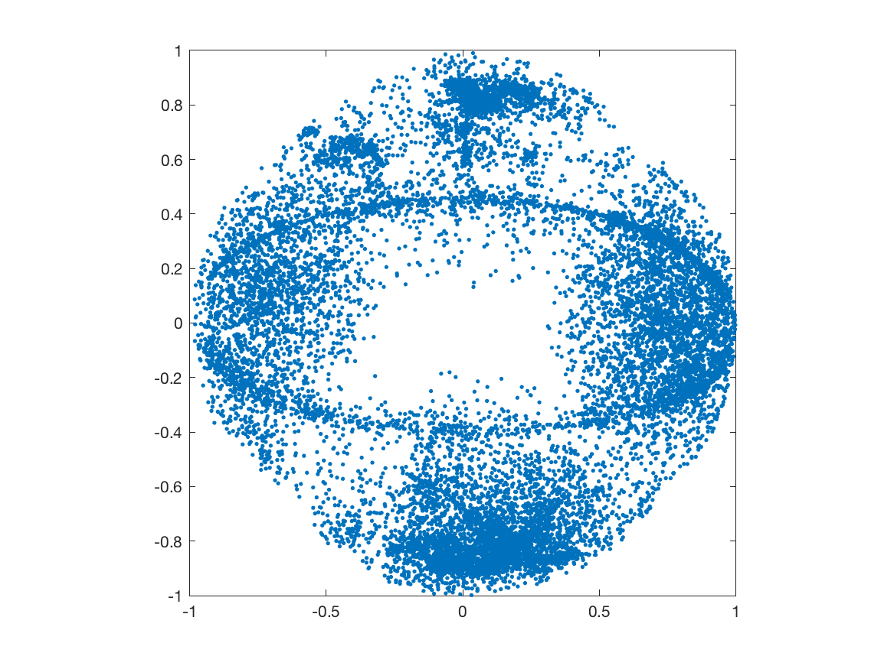
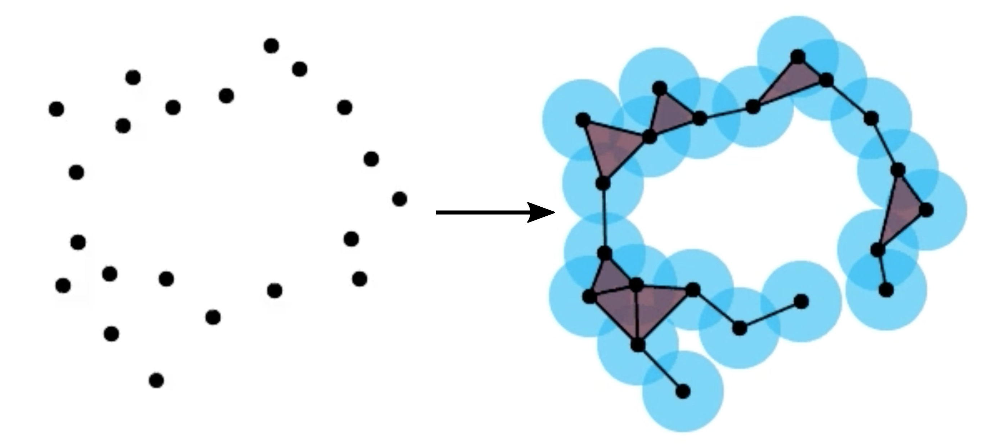
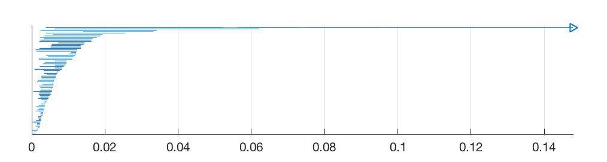
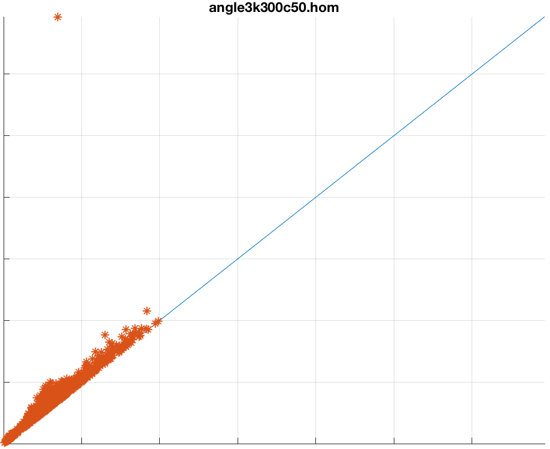
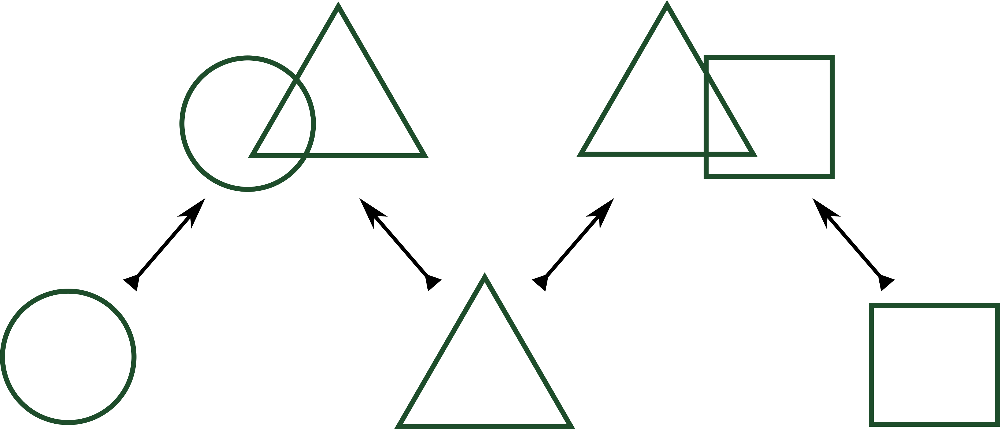
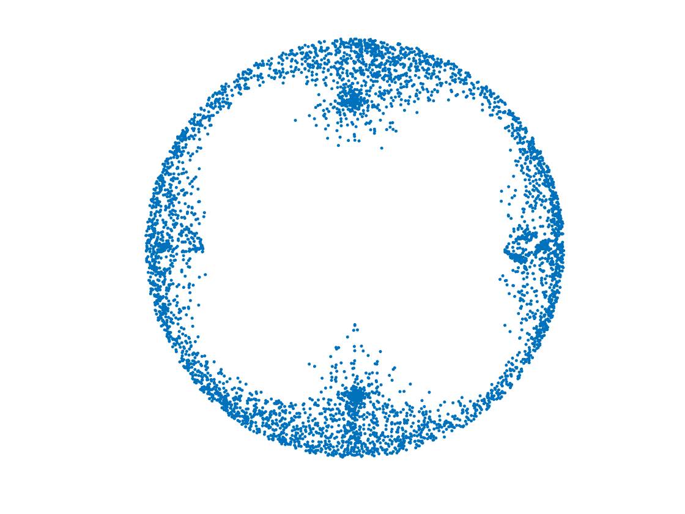
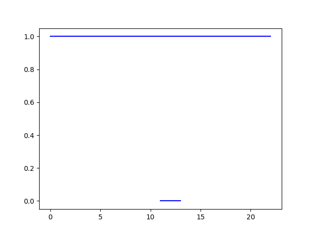

class: center, middle, titlepage count: false # Nonlinear Statistics of Optical Flow ### with Henry Adams, Johnathan Bush, Brittany Carr, and Lara Kassab --- # Outline .bigger[ I. What is optical flow? II. The Dataset III. Topological Data Analysis IV. Results ] --- # Optical flow How do pixel changes correspond to subject and camera motion? .center[<img src="http://sintel.is.tue.mpg.de/assets/canonical/0/4.gif" alt="Sintel image" height=80% width=80% /> .source[(Source: http://sintel.is.tue.mpg.de/)]] Representation: sequence of vector fields. Problem: develop algorithms to estimate optical flow from video sequences. Uses: facial recognition, autonomous cars, robotics, et cetera. --- # Optical flow .figuresplit[The problem is ill-posed! .center[<img src="https://upload.wikimedia.org/wikipedia/commons/a/ab/Barber-pole-01.gif"/> .source[(Source: Wikipedia)]]] -- .textsplit[ * Actual motion could be either rotation about vertical axis, <i>or</i> sliding vertically!] -- .textsplit[ * Algorithms have to make assumptions about which is more likely.] -- .textsplit[ * Encoding optical flow data as points in `\(\mathbb{R}^n\)` gives a <i>space</i> of optical flow data.] -- .textsplit[ * The topological/geometric structure of (dense subsets of) this space may reveal plausible assumptions. ] <!-- barber's pole animation <img src="http://i.imgur.com/2jNOp.gif" width=60% height=60% /> .center[<div style="width:600px;height:320px;overflow:hidden"> </div>--> --- # The Dataset: * Optical flow data is hard to obtain. (No tool measures ground truth optical flow.) .center[<iframe width="560" height="315" src="https://www.youtube.com/embed/ZmiBI4tPk_o?start=12" frameborder="0" allow="autoplay; encrypted-media" allowfullscreen></iframe>] -- * Sintel – Open source animated film made with Blender. -- * Can compute <i>exact</i> optical flow! ??? Mention old datasets. --- # Processing * Randomly sample 400,000 size `\(3\times 3\)` patches from the 1041 fields in the Sintel data set. -- * Patches contain both vertical and horizontal components. Rearrange into a length-18 vector. -- * Compute "contrast norm", normalize, and select only high-contrast patches. -- * Randomly downsample to 50,000 data points. -- * Pull out a dense core subset using `\(k\)`-th nearest neighbor estimator. .center[] --- class: middle, center, titlepage count: false # Interlude: ### Some algebraic topology --- # Fiber bundles: A <i>Fiber bundle</i> consists of spaces `\(F \to E \xrightarrow{\pi} B \)`, the "fiber", "total space", and "base space", respectively, where `\(\pi^{-1}(B)\)` locally resembles `\(B \times F\)`. .figuresplit[ <img src="https://upload.wikimedia.org/wikipedia/commons/thumb/8/81/Torus_cycles.svg/1200px-Torus_cycles.svg.png" alt="Torus cycles.svg" width=90% height=90%/> .center[.source[(Source: wikipedia)]] ] .textsplit[ The torus is a fiber bundle over `\(\mathbb{S}^1\)`: $$ \mathbb{S}^1 \to T \xrightarrow{\pi} \mathbb{S}^1 $$ The base space is in pink. An example fiber is in red.] -- .textsplit[ This is not the only possibility! ] --- # Fiber bundles: A <i>Fiber bundle</i> consists of spaces `\(F \to E \xrightarrow{\pi} B \)`, the "fiber", "total space", and "base space", respectively, where `\(\pi^{-1}(B)\)` locally resembles `\(B \times F\)`. .figuresplit[ <img src="https://upload.wikimedia.org/wikipedia/commons/thumb/5/5c/Klein_bottle.svg/1200px-Klein_bottle.svg.png" width="70%" height="70%" align=center/> .center[.source[(Source: Wikipedia)]] ] .textsplit[ The Klein bottle is also a fiber bundle over `\(\mathbb{S}^1\)`, with fibers `\(\mathbb{S}^1\)`! $$ \mathbb{S}^1 \to K \xrightarrow{\pi} \mathbb{S}^1 $$ ] --- # Topological Data Analysis Turn a data set into a topological space (simplicial complex) by "thickening" it: .center[] <b>Homology:</b> Turn a topological space `\(X \)` into a vector space `\(H_1(X)\)` such that dimension is number of "loops" in `\(X\)`. Calculation reduces to linear algebra. -- * Depends on amount of thickening! (Scale parameter.) --- ## Persistent Homology: Increasing sequence of spaces `\(\{ X_i \hookrightarrow X_{i+1}\}\)` turns into sequence of vector spaces and linear maps `\(H_1(X_i) \to H_1(X_{i+1})\)` that track how loops evolve. Also reduces to linear algebra! .center[<video width="480" height="360" controls loop autoplay> <source src="growingFiltration2.mov" type="video/mp4"> </video> .source[(Credit: Henry Adams)]] --- count: false ## Persistent Homology: Increasing sequence of spaces `\(\{ X_i \hookrightarrow X_{i+1}\}\)` turns into sequence of vector spaces and linear maps `\(H_1(X_i) \to H_1(X_{i+1})\)` that track how loops evolve. Also reduces to linear algebra! Display the result as either <b>barcodes</b> or persistence diagrams. .center[] --- count: false ## Persistent Homology: Increasing sequence of spaces `\(\{ X_i \hookrightarrow X_{i+1}\}\)` turns into sequence of vector spaces and linear maps `\(H_1(X_i) \to H_1(X_{i+1})\)` that track how loops evolve. Also reduces to linear algebra! Display the result as either barcodes or <b>persistence diagrams</b>. .center[] --- ## Zig-Zag Persistence: Bi-directional sequence of spaces that turns into bi-directional sequence of vector spaces tracking how loops evolve. Reduces to harder linear algebra (quiver representations). .center[] Corresponds to $$ \mathbb{R} \hookrightarrow \mathbb{R}^3 \hookleftarrow \mathbb{R}\hookrightarrow \mathbb{R}^3 \hookleftarrow \mathbb{R} $$ -- * This is the version we will need! ??? Draw a zig-zag sequence on the board? --- class: middle, center, titlepage count: false # Results --- # Horizontal flow circle Start with the densest 30% of points and compute <b>persistent homology</b>. .figuresplit[.center[]] .textsplit[Single long barcode implies circular structure.] --- # Fiber bundle structure Now sample 50% densest points. How does the structure change? -- * Using PCA, associate an angle to each data point. ??? If there is plenty of time, explain PCA a bit. -- * Parametrizes the data set by a circle (`\(\mathbb{R}P^1\)`). -- * Compute persistence of the points at each angle. .fiftyfiftyleft[] .fiftyfiftyleft[] -- * Clearly circles – do they glue together? --- # Zig-Zag Persistence * Build zig-zag filtration: $$ X_0 \hookrightarrow X_0 \cup X_1 \hookleftarrow X_1\hookrightarrow \cdots \hookleftarrow X_n $$ where `\(X_i\)` is the complex constructed from the `\(i\)`-th angle range at scale parameter `\(1\)`. (Used 12 angles.) -- * Compute the zig-zag homology using Dionysus (tricky!). -- .center[] --- # Outstanding question .center[] This is a fiber bundle over `\(\mathbb{S}^1\)` with `\(\mathbb{S}^1\)` fibers. Which one is it? -- (We hope to have an answer soon!) --- class: center, titlepage count: false # Thank you! -- ### Questions? --- # References: * Bauer, Ulrich: Ripser: A lean C++ code for the computation of Vietoris–Rips persistence barcodes. Software available at https://github.com/Ripser/ripser (2017) * Carlsson, G, Ishkhanov, T, De Silva, V, Zomorodian, A: On the local behavior of spaces of natural images. International journal of computer vision 76(1), 1–12 (2008) * Morozov, Dmitri: Dionysus. http://www.mrzv.org/software/dionysus2/ * Roosendaal, T.(Producer).: Sintel. Blender Foundation, Durian Open Movie Project, http://www.sintel.org/ (2010)